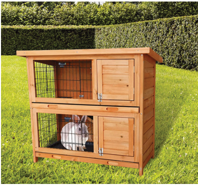
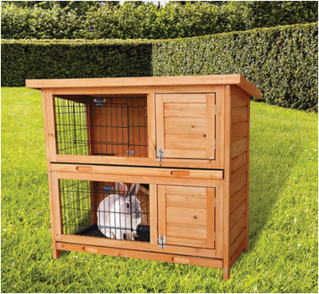

Agriculture for Secondary Schools
(c) Observe and practise some management practices done at the farm; and,
(d) Suggest measures that might be made on the farm to improve its
productivity.
2. Summarise your observations in your portfolio.
Handling rabbits
Proper handling of rabbits is essential to ensure their well-being, prevent injuries,
and make management tasks more manageable. Handling procedures for adults
will differ from those for young rabbits because of their delicacy. The basic
handling process in adults and young ones should consider a calm approach,
correct lifting, and reduced stress.
Rabbit housing and the equipment
Proper housing and equipment are essential for successful rabbit farming,
ensuring the rabbits’ health, safety, and productivity. The following is a detailed
explanation of the housing and equipment needed for keeping rabbits.
Types of rabbit housing
Hutches are individual or small
group cages, usually made from
wood or wire, elevated from
the ground (Figure 8.2). They
are ideal for small-scale rabbit
farming or backyard setups.
They provide shelter from
predators and adverse weather
conditions.
Figure 8.2: An example of a rabbit hutch
Source:
(https://www.factoryfast.com.au/products/large-
rabbit-hutch-with-base-chicken-coop-2-storey-guinea-pig-
pet-cage-house-1)
134
Student’s Book Form Two